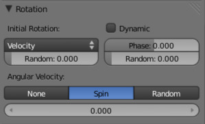

Rotation¶

Particles rotation settings.
These parameters specify how the individual particles are rotated during their travel. To visualize the rotation of a particle you should choose visualization type Axis in the Visualization panel and increase the Draw Size.
- Initial Rotation Mode
Sets the initial rotation of the particle by aligning the x-axis in the direction of:
- None
- The global X-axis.
- Normal
- Orient to the emitter’s surface normal, the objects Y axis points outwards.
- Normal-Tangent
- As with normal, orient the Y axis to the surface normal. Also orient the X axis to the tangent for control over the objects rotation about the normal. requires UV coordinates, the UV rotation effects the objects orientation, currently uses the active UV layer. This allow deformation without the objects rotating in relation to their surface.
- Velocity
- The particle’s initial velocity.
- Global X/Global Y/Global Z
- One of the global axes.
- Object X/Object Y/Object Z
- One of the emitter object axes.
- Random
- Randomizes rotation.
- Dynamic
- If enabled, only initializes particles to the wanted rotation and angular velocity and let us physics handle the rest. Particles then change their angular velocity if they collide with other objects (like in the real world due to friction between the colliding surfaces). Otherwise the angular velocity is predetermined at all times (i.e. set rotation to dynamic/constant).
- Phase
- Initial rotation phase.
- Random
- Rand allows a random variation of the Phase.
- Angular Velocity
The magnitude of angular velocity, the selector specifies the axis of angular velocity to be.
- None
- a zero vector (no rotation).
- Spin
- the particles velocity vector.
- Random
- a random vector.
If you use a Curve Guide and want the particles to follow the curve, you have to set Angular Velocity to Spin and leave the rotation on Constant (i.e. do not turn on Dynamic). Curve Follow does not work for particles.